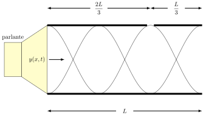

{% block MathJax %}
  <script src="https://polyfill.io/v3/polyfill.min.js?features=es6"></script>
  <script >
  MathJax = {
    tex: {
      tags: 'ams'  // should be 'ams', 'none', or 'all'
    }
  };
  </script>
  <script id="MathJax-script" async src="https://cdn.jsdelivr.net/npm/mathjax@3/es5/tex-chtml.js"></script>
  <Style>
      #mainmini {
      display: flex;
      border: 1px solid black;
    }
{% endblock %}


<div class = 'Ejercicio' >


<div class='enunciado'> Un parlante emite una onda \( y(x,t) = A \sin \left( kx - \omega t \right) \) que viaja a la velocidad del sonido \(c\) por dentro de un tubo de largo \(L\), abierto por ambos lados, y con un agujero a una distancia \(L/3\) de uno de sus extremos, como se muestra en la siguiente figura.


<p>

<ol type='a'>
<li> Si la onda que rebota al final del tubo tiene amplitud \(-A\), determine la onda reflejada y la onda resultante dentro del tubo.

</li><li> El primer modo normal posible en el tubo, ¿a qué modo normal de un tubo abierto-abierto de largo \(L\) corresponde? Dibuje el modo normal dentro del tubo en la figura de arriba. Recuerde que un agujero exige un antinodo.

</li><li> Encuentre la nueva frecuencia fundamental y todas las frecuencias posibles.

</li><li> Si fuera una cuerda con ambos extremos fijos, en qué modo normal tendríamos la misma frecuencia fundamental que en el tubo. En qué se diferencian estos fenómenos.

</li></ol>

</div><div class='solucion'>

<ol type='a'>
<li> La onda reflejada \(y_r\) es:
\begin{equation*}y_r (x,t) = -A \sin \left( k x + \omega t \right)\end{equation*}

La onda resultante es la suma de la onda incidente y la onda reflejada:
\begin{align*}y(x,t) &= y_i(x,t) + y_r(x,t) \\y(x,t) &= A \sin \left( kx - \omega t \right) - A \sin \left( k x + \omega t \right) \\y(x,t) &= -2 A \cos \left( kx \right) \sin \left( \omega t \right)\end{align*}

</li><li> El primer modo normal será con 3 nodos, que corresponde al \(n=3\) de un tubo abierto-abierto tradicional de largo \(L\), debido a que el agujero deja fijo un antinodo.

Otra manera de entenderlo es usar la parte espacial de la onda estacionaria. Si situamos el origen en el inicio del tubo, entonces se debe exigir que:
\begin{align*}\cos \left( k 0 \right) = \pm 1 \\\cos \left( k \dfrac{2L}{3} \right) = \pm 1 \\\cos \left( k L \right) = \pm 1\end{align*}

De la segunda exigencia se obtiene que:
\begin{equation*}k \dfrac{2L}{3} = m \pi \quad\rightarrow\quad \lambda_m = \dfrac{4L}{3m}\end{equation*}

Y de la tercera exigencia, que es la misma que se usa para un tubo abierto-abierto tradicional, se obtiene que:
\begin{equation*}k L = n \pi \quad\rightarrow\quad \lambda_n = \dfrac{2L}{n}\end{equation*}

Como los numero de ondas deben ser los mismos, porque es la misma onda, al dividir ambas relaciones obtenemos que:
\begin{equation*}\dfrac{2}{3} = \dfrac{m}{n}\end{equation*}
Como \(m\) y \(n\) son enteros, sólo queda la opción:
\begin{align*}m &= 2, 4, 6, \dots \\n &= 3, 6, 9, \dots\end{align*}

Así, el primer modo normal será para \(n=3\). Notemos que las posibilidades dentro del tubo quedan restringidas a cumplir ambas condiciones, que, al compararlas con la expresión de un tubo abierto-abierto tradicional, encontramos que corresponde al tercer armónico \(n=3\).

</li><li> Otro método es notar que podemos analizar sólo el tubo de largo \(L/3\), ya que todo lo que en él suceda se repetirá siempre dos veces en el tubo de \(2L/3\). Así, considerando el origen al inicio del tubo \(L/3\), debemos exigir que
\begin{align*}\cos \left( k 0 \right) = \pm 1 \\\cos \left( k \dfrac{L}{3} \right) = \pm 1\end{align*}
Obteniendo que:
\begin{equation*}\dfrac{kL}{3} = n' \pi \rightarrow \lambda_{n'} = \dfrac{2L}{3n'}\end{equation*}
y la frecuencia será:
\begin{equation*}\lambda_{n'=1} = \lambda_{n=3} = \lambda_{m=2} = \dfrac{2L}{3}\end{equation*}
Así, las frecuencias serán
\begin{equation*}f_{n'} = \dfrac{c}{\lambda_{n'}} = n' \dfrac{3c}{2L}\end{equation*}
Siendo la frecuencia fundamental:
\begin{equation*}f_{1} = \dfrac{3c}{2L}\end{equation*}

</li><li> Si fuera una cuerda de extremos fijos, el modo normal también sería \(n=3\), y la diferencia será en que reemplazamos los nodos por antinodos, y los antinodos por nodos.

</li></ol>
</div>


</div>